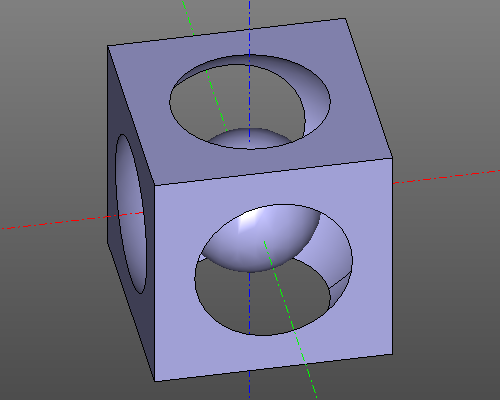

ZenCad

CAD для праведных дзэн-программеров.
Что это?
ZenCad - это библиотека для создания 3д моделей. ZenCad исповедует идею создания 3д модели методом генерации скрипта и ноги его растут из системы OpenScad. В отличие от OpenScad, ZenCad использует геометрическое ядро граничного представления OpenCascade и язык общего назначения Python.
Установка
python3 -m pip install zencad
HelloWorld
#!/usr/bin/env python3
#coding: utf-8
from zencad import *
box = box(200, 200, 200, center = True)
sphere1 = sphere(120)
sphere2 = sphere(60)
model = box - sphere1 + sphere2
display(model)
show()
Ссылки
github: https://github.com/mirmik/zencad
pypi: https://pypi.org/project/zencad